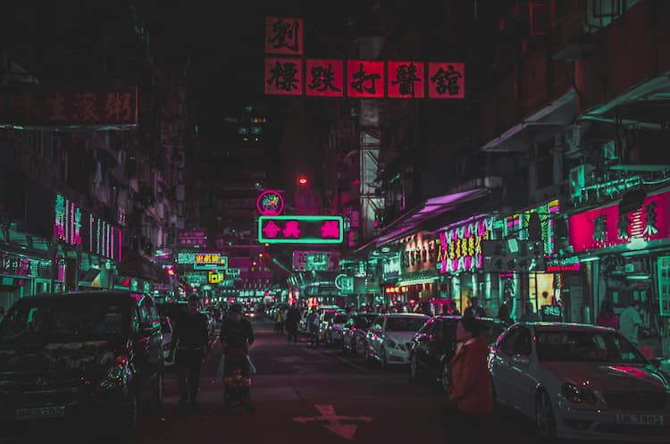

Japan is one of my favorite places because it combines ancient traditions with advanced technology and a futuristic atmosphere.
I especially like its cyberpunk culture, which can be seen in cities such as Tokyo, where neon lights, giant screens, modern buildings, and busy streets create a setting that feels like a science-fiction movie.
I also find it fascinating that this futuristic image exists alongside temples, traditional customs, and long-standing values, making Japan a unique and exciting place.
